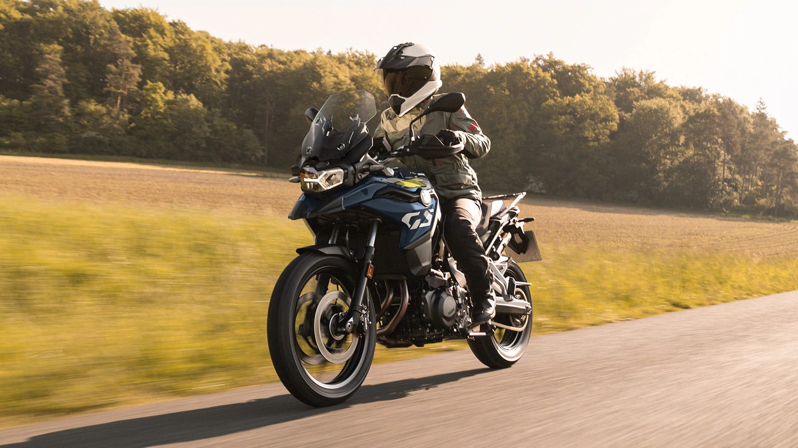

Mi experiencia con la BMW F800GS

La BMW F800GS fue una moto que adquirí después de que me robaran la Tracer 7GT estacionada en las calles de barcelona en una noche de lluvia de madrugada. Aunque esta BMW tiene las mismas características de asfalto y un poco mas de offroad.
Experiencia de conducción
La conducción de la BMW F800GS es una experiencia única. Su motor bicilíndrico en línea ofrece una potencia suave y constante, lo que la hace ideal para viajes largos y aventuras en carretera. La suspensión ajustable permite adaptarse a diferentes tipos de terreno, brindando comodidad y estabilidad.
Equipamiento
El equipamento con el que compré la moto fue bastante completo, puños calefactable, pantalla alta para la protección del viento, suspensión ajustable, arranque sin llave, luces led, control de tracción, ABS, modos de conducción y un sistema de navegación integrado.
Conclusión personal
Creo que el el cambio de la Tracer 7GT a la BMW F800GS no ha sido un cambio a mejor ya que he perdido las maletas laterales, el bajo consumo y esa deportividad que ofrecia el motor CP2 de la Tracer 7GT. Sin embargo, la BMW F800GS sigue siendo una moto versátil y confiable.
Volver a las publicaciones